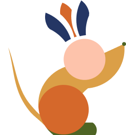
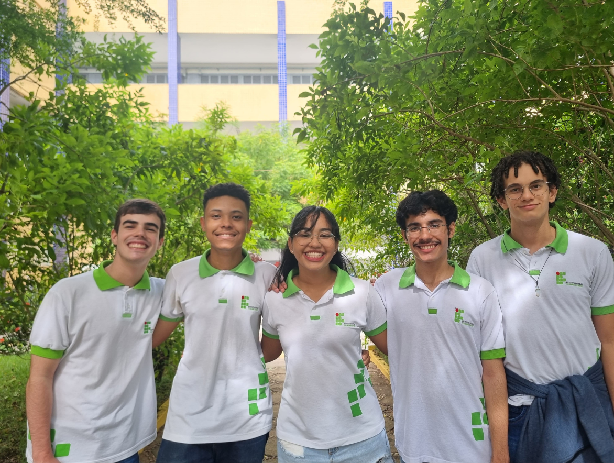

A falta do controle zoonótico:
A ameaça invisível que podemos vencer com informação e prevenção. Seja um agente de mudança. A saúde pública começa com cada um de nós.
 Quem somos?
A equipe Potiguaras, composta por alunos do Instituto Federal de Educação, Ciência e Tecnologia do Rio Grande do Norte (IFRN) - Campus Natal Central, alcançou um marco significativo ao ser medalhista de ouro da Olimpíada Brasileira de Tecnologia (OBT). Demonstrando habilidades excepcionais e dedicação, a equipe foi honrada com o prêmio de "Melhor Ouro".
Como surge o projeto?
A falta do controle eficaz das zoonoses representa um sério risco para a saúde pública e para a economia global. A informação é essencial para atenuar esse problema, prevenindo surtos devastadores, protegendo a saúde pública, garantindo a segurança alimentar, promovendo o bem-estar animal e evitando perdas econômicas na agricultura e nos sistemas de saúde.